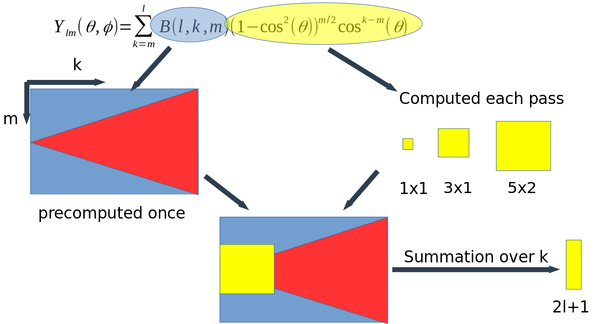

Iterative SE(3) transformer
Code
Introduction
DeepMind mentioned in their presentation that updates in the structural part (Figure 1) of AlphaFold2 were SE(3) equivariant: if inputs of each transformer block are rotated and translated, the outputs are rotated and translated accordingly. This is an essential property of the model, because it should not depend on the particular orientation of the molecule. In this chapter we design a dataset, that requires SE(3) equivariance of the model in order to generalize to the test set.
Figure 1: SE(3) equivariant part of AlphaFold2.
Dataset
Because we want to test model equivariance and design iterative architecture, we decided to use particle dynamics dataset for this purpose. First, we define the interaction potential between N particles and run T timesteps of ordinary Newtonian dynamics (Figure 2). We repeat this procedure with different number of particles and time lengths.
Afterwards, we slice these simulations into blocks of blocks of 10 timesteps. The inputs to the model are coordinates and velocities of each particle in the beginning of the block and the targets are the coordinates of the particles at the end of the block.
Figure 2: And example of one sample from the dataset.
SE(3) transformer
Approaching this problem we looked at sevaral papers, that developed SE(3) equivariant models:- Cormorant : Covariant Molecular Neural Networks [1]
- Tensor field networks: Rotation- and translation-equivariant neural networks for 3D point clouds [2]
- Equivariant Attention Networks [3]
The Cormorant networks seemed to fit perfectly for this problem and it also was published before the recent CASP experiment, however authors noted that the training procedure was unstable after 5-6 layers. Meanwhile according to DeepMind presentation AlphaFold2 has ~50 layers in the structural part of the model.
The tensor field networks and by extention equivariant attention networks did not have the same drawback as Cormorant networks. And although equivariant attention networks was published after CASP14 started, it seemed like a natural extention of the tensor field networks and we think DeepMind group probably independently discovered this idea.
Figure 3 shows the workflow of SE(3) transformer. The key step here is the computation of an equivariant basis consisting of spherical harmonics with the radial part. The drawback of this work is that authors assumed that the coordinates of the nodes will stay constant during the forward pass of the model and made the basis computation non-differentiable. However this can be easily fixed.
Figure 3. Schematic workflow of SE(3) transformer.
Making SE(3) transformer fully differentiable
When coordinates of nodes are updated we have to recompute spherical harmonics and reform the basis out of them using Clebsh-Gordan coefficients. Because C-G coefficients do not depend on the coordinates, we focus on the evaluation of spherical harmonics. In the original implementation of SE(3) transformer they are calculated using recursive formula, however we think it might result in performance loss or numerical instability later on.
The implementations of tensor field networks and by extention SE(3) transformer use the tesseral spherical harmonics: $$Y_{lm}(\theta, \phi) = \begin{cases} \\ (-1)^m \sqrt{2} \sqrt{\frac{2l+1}{4\pi}\frac{ (l-|m|)!}{(l+|m|)!}} P_l^{|m|}(cos(\theta)) sin(|m|\phi), &m<0 \\ \sqrt{\frac{2l+1}{4\pi}} P_l^{m}(cos(\theta)), &m=0 \\ (-1)^m \sqrt{2} \sqrt{\frac{2l+1}{4\pi}\frac{ (l-m)!}{(l+m)!}} P_l^{m}(cos(\theta)) sin(m\phi), &m>0 \\ \end{cases} $$ where $P^m_l$ is a legendre polynomial and the angles $\theta$ and $\phi$ come from transforming diffence between nodes coordinates into spherical coordinate system: $$P^m_l(x) = (-1)^m 2^l (1-x^2)^{\frac{m}{2}} \sum_{k=m}^l \frac{k!}{(k-m)!} x^{k-m} \left(\begin{array}\\l\\k\end{array}\right)\left(\array{ \frac{l+k-1}{2}\\l}\right)$$We can rewrite tesseral spherical harmonics in the following way: $$Y_{lm}(\theta, \phi) = \sum_{k=m}^{l} B(k,l,m) \left(1-cos^2(\theta)\right)^{\frac{m}{2}} cos^{k-m}(\theta) sin(m\phi)$$ where coefficients $B(k,l,m)$ do not depend on the angles $\theta$ and $\phi$ and can be precomputed before training.
To compute the harmonics with precomputed coefficients $B$ we compute tensors that depend on the angles, multiply them by the coefficients $B$ and sum over the index $k$ (Figure 4).

Figure 4: Computing sherical harmonics with the precomputed coefficients $B(k,l,m)$.
Model
Now, with fully differentiable basic building blocks we can finally build a model, that will predict coordinates of particles 10 timesteps ito the future. However, we have to take into accout that SE(3) transformer deals with vector fields and node coordinates are a set of three scalar fields. Therefor we instead predict displacement of each node compared to the previous iteration of the model.
Figure 5 shows the model architecture. Each transformer block predicts the displacement of the particles, then this displacement is applied to the coordinates and the procedure is repeated for 4 iterations.
Figure 5: Iterative SE(3) transformer model.
Results
After training for 100 epochs we have the following result:| # | Train | Test |
|---|---|---|
| Epoch 0 | 1.76 | 7.17 |
| Epoch 100 | 0.063 | 0.037 |
Citations
- 1. Anderson, Brandon, Truong-Son Hy, and Risi Kondor. "Cormorant: Covariant molecular neural networks." arXiv preprint arXiv:1906.04015 (2019)
- 2. Thomas, Nathaniel, et al. "Tensor field networks: Rotation-and translation-equivariant neural networks for 3d point clouds." arXiv preprint arXiv:1802.08219 (2018)
- 3. Fuchs, Fabian B., et al. "SE (3)-transformers: 3D roto-translation equivariant attention networks." arXiv preprint arXiv:2006.10503 (2020)